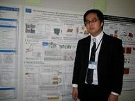
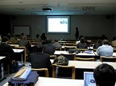
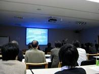
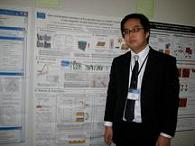
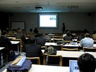
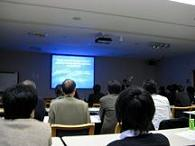

ISSS-5
11月9 - 13日、早稲田大学でInternational Symposium on Surface Science and Nanotechnology (ISSS-5)が開催された。 当研究室からの参加者と題目は下記の通り。ISSS-5
口頭・ポスター発表風景
  
T. Ueno (D1) J. Jiang (D1) Y. Nishimura (M2)
  
T. Ueno (D1) J. Jiang (D1) Y. Nishimura (M2)
- Date
- Name
- Title
- Nov. 10
- T. Ueno (D1)
- Spin reorientation transition of Fe ultra-thin films on Pd(001) studied by X-ray magnetic circular dichroism spectroscopy
- R. Nishimura (M2)
- Spin polarization of spin-orbit induced electronic structures of Bi(111)
- T. Kadono (D3)
- Origin of spin-splitting in surface state bands of Sb(111)
- K. Kanomaru (M1)
- Adsorbate induced spin-split band structre of the Si(111)√3× √3-Sb surface
- S. Tohoda (M2)
- Influence of Cr overlayer on Fe magnetic property of Cr/Fe/Cu(001)
- Nov. 12
- J. Jiang (D1)
- High-resolution angle-resolved photoemission study of the surface-derived state in Al(100) single crystal
- Y. Cui (HSRC researcher, OB)
- Interaction of Co atoms with Si(111) surface studied by scanning tunneling microscopy
- M. Ye (D1)
- Graphene epitaxially grown on the step with unit-cell height of 4H-SiC(0001) substrate
- Nov. 13
- K. Miyamoto (HSRC researcher, OB)
- Unveiling spin characters of spin-orbit induced surface states
- Y. Nishimura (M2)
- Surface electronic structures of ferromagnetic Ni(111) studied by scanning tunneling microscopy and spectroscopy